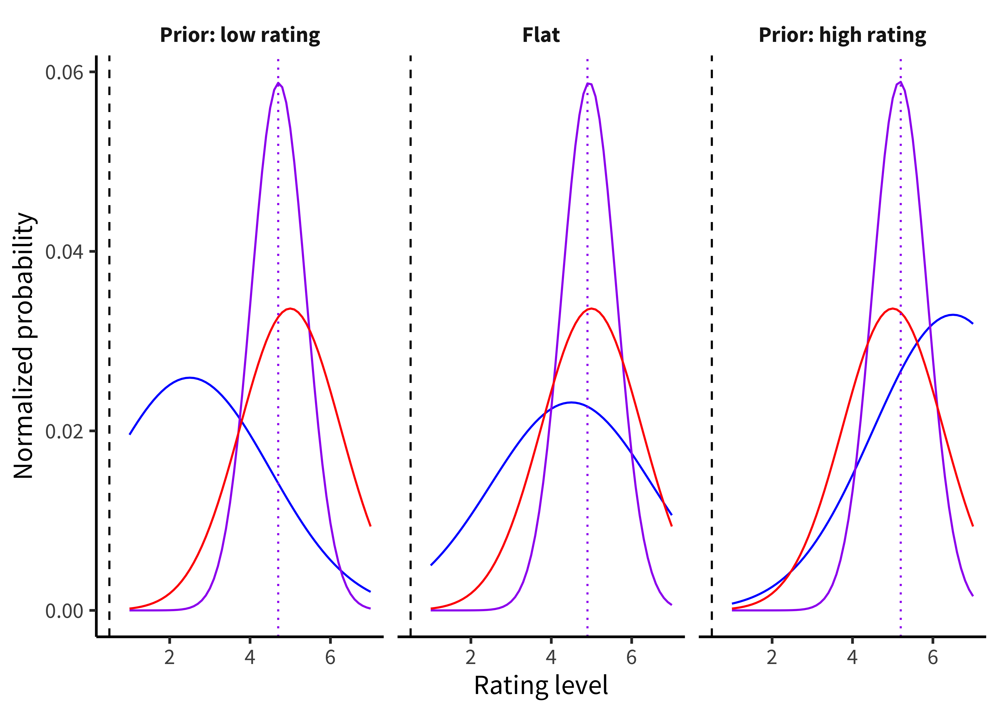

Idea of a sampling distribution
NEEDS TO BE FIXED WITH RESPECT TO CASE STUDY
An alternative way to frame our statistical practice is to start from the idea of estimation.
Let’s say we want to estimate some quantity, we’ll call it \(h\) – our belief about the participant’s accuracy.35 Technically, other specifications of random-effects meta-analysis are possible. For example, robust variance estimation does not require making assumptions about the distribution of effects across studies (Hedges, Tipton, and Johnson (2010)Hedges, Larry V, Elizabeth Tipton, and Matthew C Johnson. 2010. “Robust Variance Estimation in Meta-Regression with Dependent Effect Size Estimates.” Research Synthesis Methods 1 (1): 39–65.). These approaches also have other substantial advantages, like their ability to handle effects that are clustered (e.g., because some papers contribute multiple estimates; Hedges, Tipton, and Johnson (2010)Hedges, Larry V, Elizabeth Tipton, and Matthew C Johnson. 2010. “Robust Variance Estimation in Meta-Regression with Dependent Effect Size Estimates.” Research Synthesis Methods 1 (1): 39–65.; Pustejovsky and Tipton (2021)Pustejovsky, James E, and Elizabeth Tipton. 2021. “Meta-Analysis with Robust Variance Estimation: Expanding the Range of Working Models.” Prevention Science, 1–14.) and their ability to provide better inference in meta-analyses with relatively few studies (Tipton (2015)Tipton, Elizabeth. 2015. “Small Sample Adjustments for Robust Variance Estimation with Meta-Regression.” Psychological Methods 20 (3): 375.). For these reasons, we tend to use these methods by default when conducting meta-analyses. We observe some data \(d\), consisting of the set of correct and incorrect responses in the experiment. Now we can use Bayes’ rule, a tool from basic probability theory, to estimate this number.
Bayes’ rule says:
\[ \color{purple}{p(h | d)} = \frac{\color{red}{p(d | h)} \color{blue}{p(h)}}{\color{black}{p(d)}}. \] Each part of this equation has a name, and it’s worth becoming familiar with them. The thing we want to compute (\(p(h|d)\)) is called the posterior probability – it tell us what we should believe about the participant’s ability given the data we observed. We then break that down into two terms in the numerator.36 The estimate of \(\widehat{\tau}^2\) is a bit more complicated, but is essentially a weighted average of studies’ residuals, \(\widehat{\theta_i} - \widehat{\mu}\), while subtracting away variation due to statistical error, \(\widehat{\sigma}^2_i\) (DerSimonian and Laird (1986)DerSimonian, Rebecca, and Nan Laird. 1986. “Meta-Analysis in Clinical Trials.” Controlled Clinical Trials 7 (3): 177–88.; Brockwell and Gordon (2001)Brockwell, Sarah E, and Ian R Gordon. 2001. “A Comparison of Statistical Methods for Meta-Analysis.” Statistics in Medicine 20 (6): 825–40.).
The first part of the numerator is \(p(d|h)\), the probability of the data we observed given our hypothesis about the participant’s ability. This part is called the likelihood.37 For example, one approach to investigate moderators in meta-analysis is meta-regression, in which moderators (e.g., type of intergroup contact) are included as covariates in a random-effects meta-analysis model (Thompson and Higgins (2002)Thompson, Simon G, and Julian PT Higgins. 2002. “How Should Meta-Regression Analyses Be Undertaken and Interpreted?” Statistics in Medicine 21 (11): 1559–73.). As in standard regression, coefficients can then be estimated for each moderator, representing the mean difference in population effect between studies with versus without the moderator. This term tells us about the relationship between our hypothesis and the data we observed – so if we think the participant has high ability (say \(h = .9\)) then the probability of a bunch of low accuracy observations will be fairly low.
The second term in the numerator, \(p(h)\), is called the prior. This term encodes our beliefs about how likely our participant is to have different levels of ability. Intuitively, if we think that they are very unlikely to have high tea discrimination ability, we should require more evidence to convince us of a particular level of discrimination. In contrast, if we think they are likely to have this ability, we should be easier to convince.
Figure 4.1: Examples of Bayesian inference about tea discrimination ability under three different priors (facets). Blue lines give the prior probability distribution, red lines give the likelihood of the data, and purple lines give the posterior distribution from combining likelihood and prior.
Figure 4.1 gives an example of the combination of prior and data.38 However, evidence is mixed regarding whether including gray literature actually reduces across-study biases in meta-analysis ((tsuji2019addressing?), Mathur and VanderWeele (2021)Mathur, Maya B, and Tyler J VanderWeele. 2021. “Estimating Publication Bias in Meta-Analyses of Peer-Reviewed Studies: A Meta-Meta-Analysis Across Disciplines and Journal Tiers.” Research Synthesis Methods 12 (2): 176–91.). For the sake of this example, we assume that we have run 12 tea discrimination trials and observed 9 successes and 3 failures. The evidence alone – with no prior – suggests a discrimination estimate of \(9/12 = .75\).39 Essentially, funnel plots and most related methods can detect publication bias in which (1) small studies with large positive point estimates are more likely to be published than small studies with small or negative point estimates; and (2) the largest studies are published regardless of the magnitude of their point estimates. Funnel plots may not detect publication bias that favors significant results. For more detail on these points, see Maier, VanderWeele, and Mathur (2021)Maier, Maximilian, Tyler J VanderWeele, and Maya B Mathur. 2021. “Using Selection Models to Assess Sensitivity to Publication Bias: A Tutorial and Call for More Routine Use.” Under Review.. When we use a flat prior, we get the same estimate of 0.75.40 High-level overviews of selection models are given in McShane, Böckenholt, and Hansen (2016)McShane, Blakeley B, Ulf Böckenholt, and Karsten T Hansen. 2016. “Adjusting for Publication Bias in Meta-Analysis: An Evaluation of Selection Methods and Some Cautionary Notes.” Perspectives on Psychological Science 11 (5): 730–49. https://doi.org/10.1177/1745691616662243. and Maier, VanderWeele, and Mathur (2021)Maier, Maximilian, Tyler J VanderWeele, and Maya B Mathur. 2021. “Using Selection Models to Assess Sensitivity to Publication Bias: A Tutorial and Call for More Routine Use.” Under Review.. for more methodological detail, see for example Hedges (1984)Hedges, Larry V. 1984. “Estimation of Effect Size Under Nonrandom Sampling: The Effects of Censoring Studies Yielding Statistically Insignificant Mean Differences.” Journal of Educational Statistics 9 (1): 61–85. https://doi.org/10.3102/10769986009001061., (iyengar1988selection?), and (vevea1995general?). For a tutorial on fitting and interpreting selection models, see Maier, VanderWeele, and Mathur (2021)Maier, Maximilian, Tyler J VanderWeele, and Maya B Mathur. 2021. “Using Selection Models to Assess Sensitivity to Publication Bias: A Tutorial and Call for More Routine Use.” Under Review.. In contrast, if we go in assuming that discrimination is likely to be absent or weak, we are biased downward in our eventual estimate of 0.69; if we go in assuming good discrimination, we end up biased upwards to 0.78.
Fisher’s original framwork for significance testing focused only on the null hypothesis of no discrimination. In contrast, the Bayesian estimation method here focuses on the magnitude of accuracy.[If you’re reading carefully, you might have noticed that we could have discovered that the estimate of accuracy was very similar to chance – more about this below.][MM: I entirely agree with the spirit of this, but I worry about framing this as “Fisherian NHST vs. Bayesian estimation” when the issue really is “Fisherian NHST” vs “any form of estimation with continuous inference.” We wouldn’t want to inadvertently reinforce the misconception that Bayesian methods inherently alleviate the central issues with NHST, even though Bayesian methods of course have numerous important merits.] The intuition we’d like you to get is that, if you are an experimentalist who cares about the magnitude of causal relationships (and we hope you are), then Fisher’s statistical approach isn’t ideally suited to your goals.[^MM: Yes, I like this framing in the final sentence much better.]
With all our talk about estimation above, we didn’t say much about what precisely was being estimated. Often, researchers seek out some sort of common standardized way for describing the relationships they observe in the study.
For example, imagine that Mika and Nicholas are interested in examining whether a dog-petting intervention can reduce depression relative to a placebo. They use the same self-report depression measure, but Mika decides to make it a 10-point self-report scale (0 = “I feel blissful” to 10 = “I feel extremely depressed”), whereas Nicholas decides to make it a 100-point scale (1 = “I feel blissful” to 100 = “I feel extremely depressed”). Observing that the intervention led to a 1-point decrease in Mika’s scale is quite impressive. But observing a 1-point decrease in Nicholas’ scale? Not so much!
To ensure that we have a common currency, many researchers describe their observations using standardized metrics. A common example of a such a metric is Cohen’s d, which provides a standardized estimate of the difference between two means. There are many different ways to calculate Cohen’s d (Lakens, 2013), but there usually some variant of the following formula:
\[d = \frac{M_1- M_2}{SD_1}\]
In the above example, \(M_1\) could be the depression scores of patients who were assigned to pet dogs, whereas \(M_2\) would be the scores of patients who were assigned to a placebo condition. \(SD_1\) refers refers to standard deviation of the participants who were randomly assigned to pet dogs. Note: researchers usually seek to pool the standard deviations of both groups, but (for simplicity) we will assume that both groups have the same standard deviation (and thus \(SD_1 = SD_2 = SD_{pooled}\)).
Because Mika and Nicholas used different scales, they will nature observe different amount of variability. For example, if all participants indicate that they are between 2-8 on a 10-point scale, this should translate to a range of 20-80 on a 100-point scale. Similarly, a standard deviation of 2 on Mika’s scale should correspond to a standard deviation of 20 on Nicholas’ scale.
So let’s compare their results, assuming that participants in the placebo groups have a mean depression score at the center of the scale (5 out of 10; 50 out of 100) and that both Mika and Nicholas observe a 1-point decrease is depression in the dog-petting group.
\[{d_{Mika}} = \frac{M_1- M_2}{SD_1} = \frac{5- 4}{2} = \frac{1}{2} = 0.5\]
\[{d_{Nicholas}} = \frac{M_1- M_2}{SD_1} = \frac{50- 49}{20} = \frac{1}{20} = .05\]
When using Cohen’s d, a value of .50 is often considered a strong effect, whereas a value of .05 would often be considered negligible (at least in the context of an intervention designed to improve depression).
Of course, there are many different standardized effect sizes that researchers can use. Although we described a common standardized effect size to describe differences in means, there are also standardized effect sizes for describing the amount of variance explained (e.g., Pearson’s r, R2, and \(\eta^2\)) or relationships involving categorical variables (e.g., Odds Ratio). For a review, see… (Any recommendations?)
Pro: comparability across studies (e.g., school interventions to improve achievement?). Useful for meta-analysis (e.g., MA of facial feedback, which used a lot of different measures of emotion; infant consonant discrimination (cross method comparison)). Useful for a lot of power analysis software and packages (e.g., GPower and many packages in R).
Con: loss of information about measures and real-world predictions; dependence on baseline variability. Power analysis can only be done via annoying simulations. Not related to any real units. Often not very intuitive (have fun trying to explain what Cohen’s d is to a very curious non-scientist. Fun fact: the Wikipedia article on effect sizes has been flagged as “too technical for most readers to understand” since 2014!)
Talk about standard error with respect to SD of sampling distribution
CIs for inference
Confidence intervals: 95% of these regions will contain the TRUE parameter Remember frequentists - there is a TRUE parameter
https://istats.shinyapps.io/ExploreCoverage/
But this is not our typical interpretation, which is that 95% chance parameter is in this interval That’s the BAYESIAN interpretation
Bayesian Estimation
Find the posterior distribution of the parameter of interest You can take its mean Its HPD (highest posterior density)
Confidence in confidence intervals: https://link.springer.com/article/10.3758/s13423-015-0947-8
Error bar: - standard deviation (why is this bad)? - SEM - CI